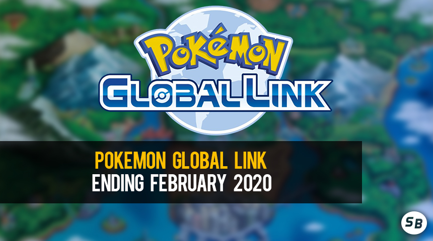
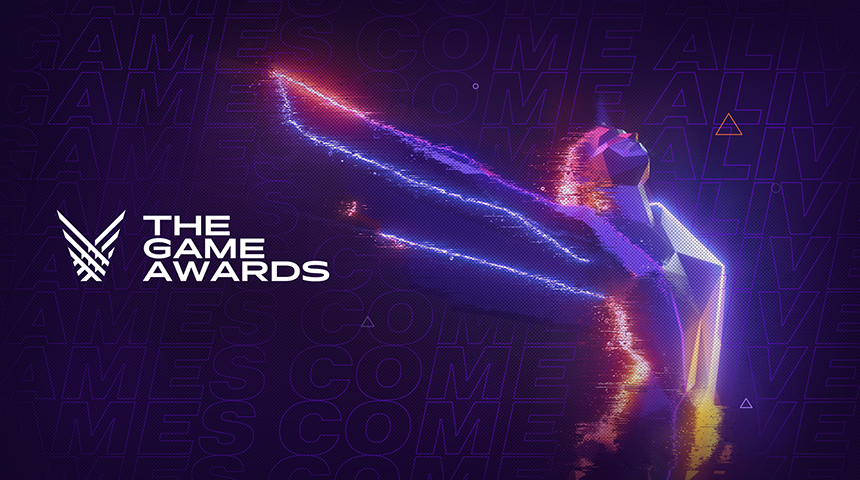

Pokemon Global Link ending February 2020
The Pokémon Global Link Service, used by many since Pokémon Black and White up until Pokémon Ultra Sun & Ultra Moon, will soon be shut down. On February 24th, 2020 users will no longer be able to access any gameplay features in Pokemon Sun, Pokemon Moon, Pokemon Ultra Sun, and Pokemon Ultra Moon that require a connection to the PGL...
full article

Resident Evil Spirits Announced
Today, Nintendo’s eSports Twitter announced that four spirits from the Resident Evil franchise will be in Super Smash Bros. Ultimate! The four spirits are Chris, Wesker, Jill and the often-speculated Leon. They will be available on November 29th and will stay on the board for five days. It is currently unknown if this means these characters cannot become DLC fighters in the future.
full article

The Game Awards 2019 nominees unveiled
The Game Awards are back this year, and they announced their nominee list this week. Super Smash Bros. Ultimate was nominated for Game of the Year along with Death Stranding, Resident Evil 2, Sekiro: Shadows Die Twice, Control, and The Outer Worlds.
full article